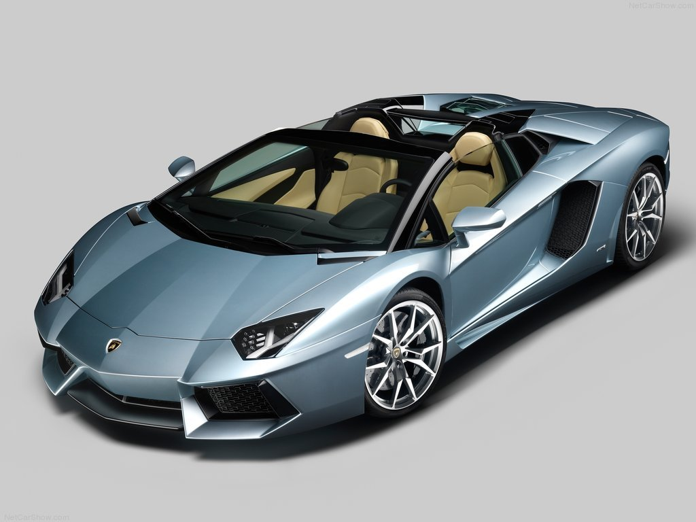
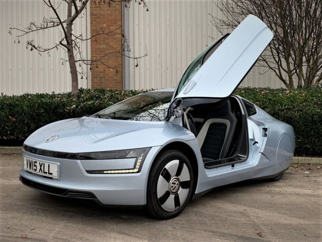
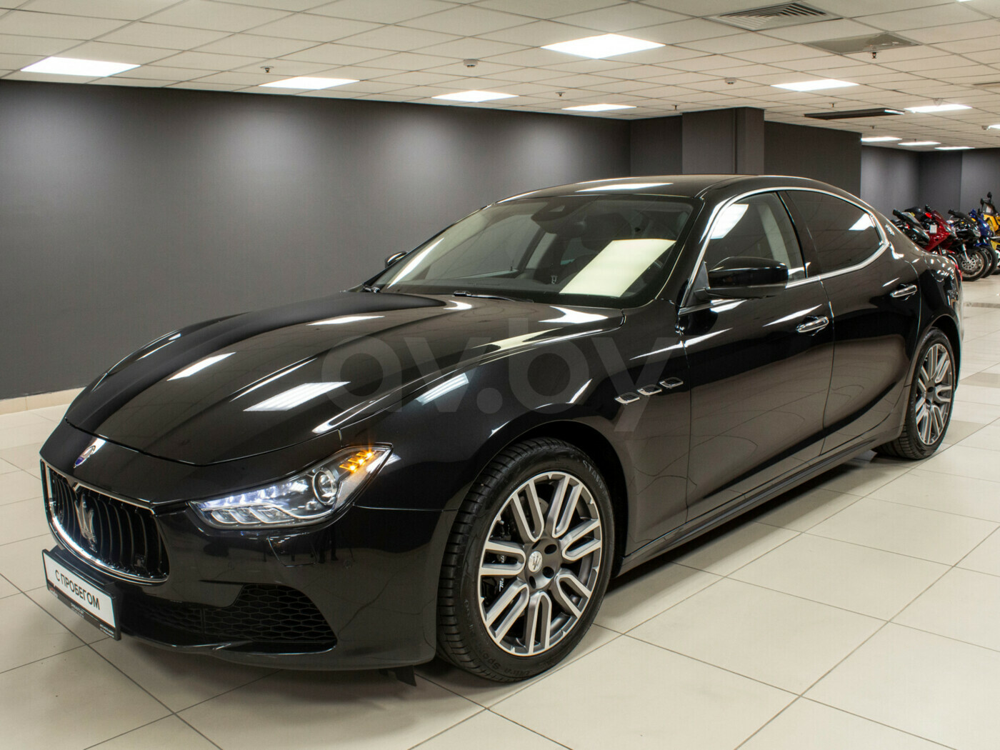

| Топ 3 машин моей мечты | |||
| Фото | Марка | Год выпуска | Описание |
|  | Lamborghini Aventador Roadster | 2018 | Концерн Lamborgini в этом году порадовал стильным родствером, после не менеее успешной презентации авто в купейном исполнении 2 года назад. Aventador LP 700-4 украшают оригинальные диски Dione 20«/21», изготовленные из суперлегкого кованого алюминия и добавляющие модной агрессивности. К тому же, они снизили массу машины на 10 кг. |
|  | Volkswagen XL1 | 2013 | Впервые автомобиль представлялся широкой публике на женевском автосалоне, событие состоялось зимой 2013 года. Машина произвела хорошее впечатление, получив статус наиболее экономичной. «Лошадке» нужно всего 900 г дизтоплива на 100 км. «Эталоном современной рациональной езды» объявил новинку германских производителей М. Хардигри. Такая экономичность объясняется небольшим весом (795 кг) и увеличенным уровнем аэродинамических параметров. |
|  | Maserati Ghibli | 2018 | Берк из Vanity Fair охарактеризовал новинку средних параметров как изысканную и элегантную. Уже в начале осени стильный четырехдверный седан Ghibli появится на российском рынке. В Европе его стоимость начинается от €80 376, и доступным это авто явно не назовешь. |